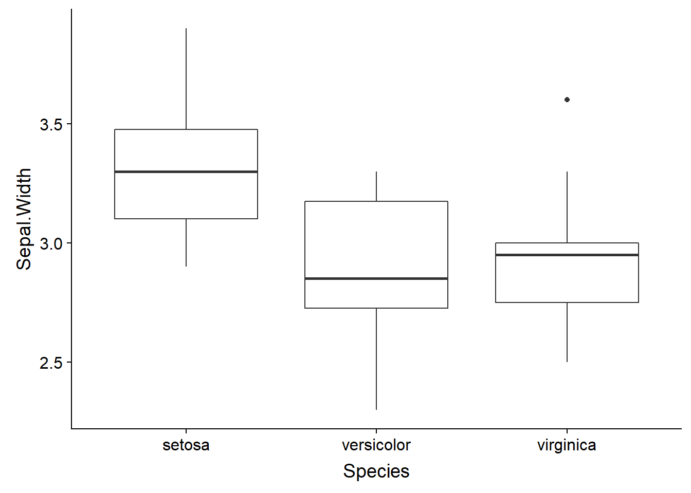
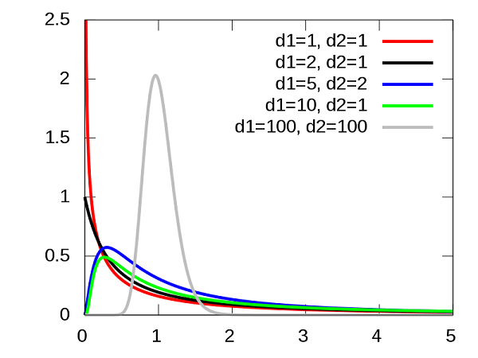
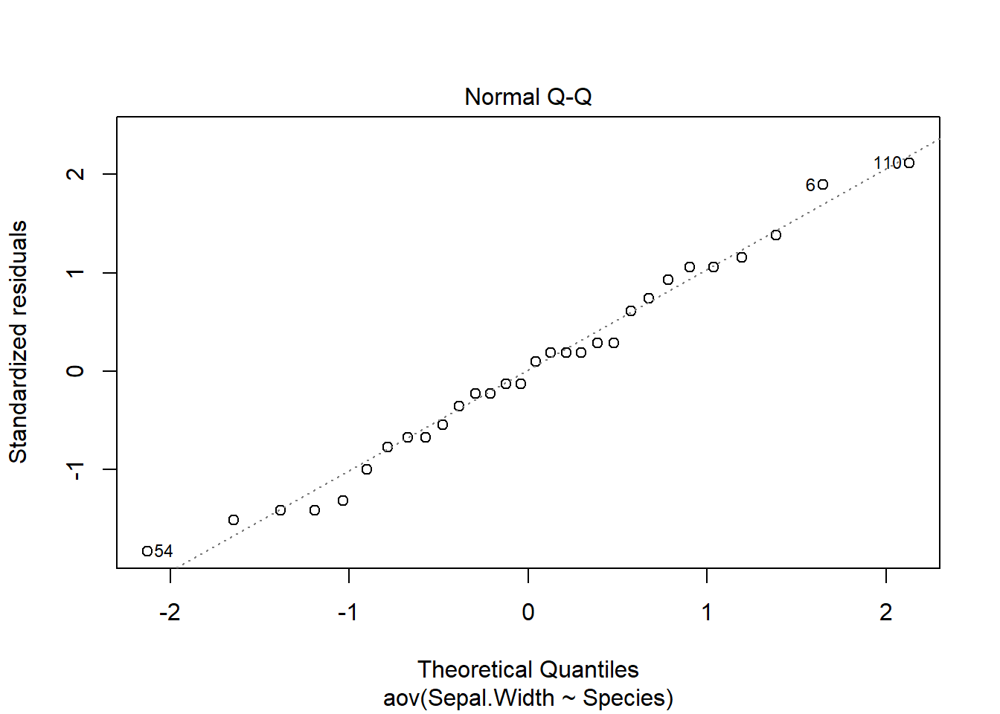
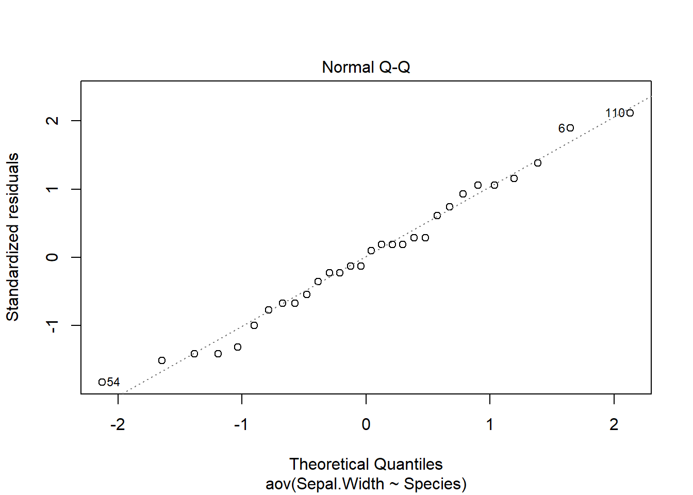
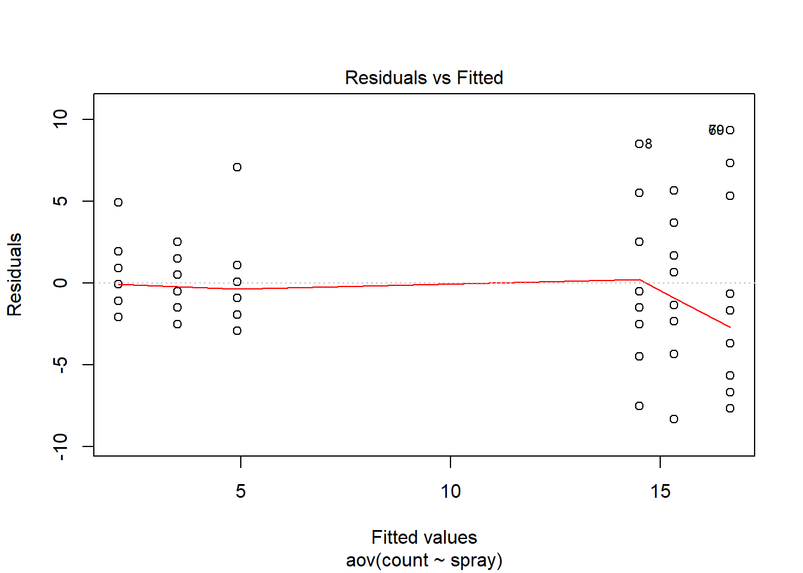
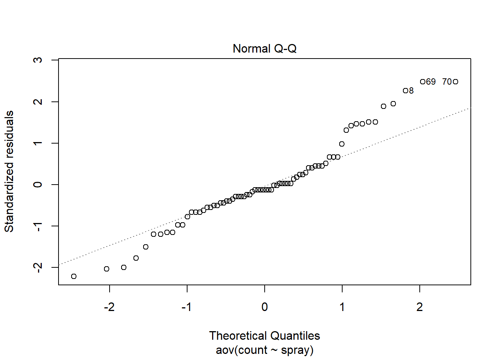
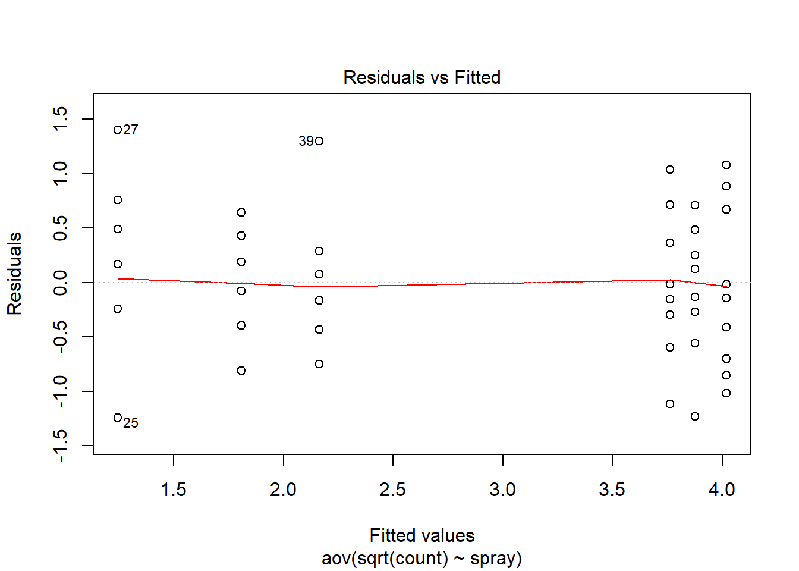
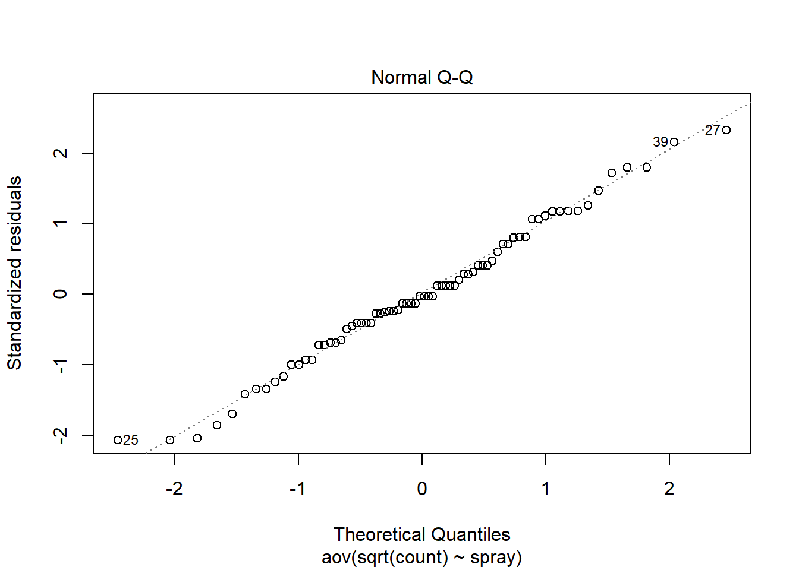

Tableaux de contingence et ANOVA
23 septembre 2019
Plan général
Au dernier cours, nous avons utilisé le test \(t\) pour déterminer si la valeur moyenne d’une variable différait entre deux groupes. L’analyse de la variance (ANOVA) dont nous commencerons à discuter aujourd’hui permet d’étendre cette comparaison à plusieurs groupes.
De façon plus générale, nous pourrions dire que le test \(t\) et l’ANOVA portent sur l’effet de prédicteurs catégoriels (ex.: différents traitements) sur une réponse numérique. Un autre test que nous utiliserons ce cours-ci est le test du \(\chi^2\), qui vise à détecter une association entre deux variables catégorielles.
Plus tard dans la session, nous nous concentrerons sur les modèles de régression. Ceux-ci ont une portée plus large puisqu’ils permettent de relier une variable réponse à des prédicteurs catégoriels et numériques. En particulier, nous verrons que le test \(t\) et l’ANOVA sont des exemples de modèles de régression linéaire.
| Réponse catégorielle | Réponse numérique | |
|---|---|---|
| Prédicteur catégoriel | Test du \(\chi^2\) | Test \(t\) (2 catégories) ou ANOVA (plus de 2 catégories) |
| Prédicteur catégoriel ou numérique | Régression logistique | Régression linéaire |
Objectifs
Utiliser le test du \(\chi^2\) pour comparer les fréquences d’une variable catégorielle à une distribution de référence, ou pour tester l’association entre deux variables catégorielles dans un tableau de contingence.
Comprendre le principe de l’analyse de la variance et réaliser une ANOVA à un facteur.
Déterminer les différences significatives entre traitements à partir du test des étendues de Tukey.
Comparer les fréquences d’une variable à une distribution de référence
Exemple: Pour vérifier si un dé est équilibré, nous compilons le résultat de 100 lancers. Le tableau suivant montre le nombre de fois où chaque nombre a été obtenu (sa fréquence \(f\)).
| \(i\) | \(f_i\) |
|---|---|
| 1 | 12 |
| 2 | 17 |
| 3 | 16 |
| 4 | 18 |
| 5 | 11 |
| 6 | 26 |
| Total | 100 |
Notre hypothèse nulle est que le dé est équilibré, donc il y a une probabilité égale d’obtenir chaque valeur (\(p_i\) = 1/6 pour \(i\) de 1 à 6). Si on multiplie ces probabilités par le nombre total de lancers, on obtient la fréquence attendue (\(\hat{f_i}\)) pour chaque nombre.
| \(i\) | \(f_i\) | \(p_i\) | \(\hat{f_i}\) |
|---|---|---|---|
| 1 | 12 | 1/6 | 16.7 |
| 2 | 17 | 1/6 | 16.7 |
| 3 | 16 | 1/6 | 16.7 |
| 4 | 18 | 1/6 | 16.7 |
| 5 | 11 | 1/6 | 16.7 |
| 6 | 26 | 1/6 | 16.7 |
| Total | 100 |
Test du \(\chi^2\) de Pearson
Pour une variable avec \(k\) catégories, la valeur du \(\chi^2\) (khi-carré) est calculée ainsi:
\[ \chi^2 = \sum_{i = 1}^k \frac{(f_i - \hat{f_i})^2}{\hat{f_i}} \]
La statistique \(\chi^2\) mesure donc la somme des déviations entre les fréquences observées et attendues (normalisées par la valeur attendue). Lorsque les \(\hat{f_i}\) pour chaque catégorie sont assez grandes (typiquement, 5 ou plus), cette statistique suit approximativement une distribution \(\chi^2_{k-1}\), où \(k - 1\) est le nombre de degrés de liberté.
Rappel: Le nombre de degrés de liberté correspond au nombre de valeurs indépendantes utilisées pour le calcul d’une statistique. Ici, le \(\chi^2\) est calculé à partir des déviations entre fréquence observée et fréquence attendue pour \(k\) catégories. Toutefois, puisque la somme des déviations doit être égale à 0 (car le total des \(f_i\) et des \(\hat{f_i}\) est le même) il y a \(k - 1\) déviations indépendantes.
\[ \sum_{i=1}^k f_i = \sum_{i=1}^k \hat{f_i} \], donc \[\sum_{i=1}^k (f_i - \hat{f_i}) = 0\]
Voici la distribution \(\chi^2_{k}\) pour différentes valeurs de \(k\):

Dans R, la fonction pchisq(q, df) donne la probabilité d’obtenir une valeur inférieure ou égale à \(q\) pour une distribution \(\chi^2\) avec \(df\) degrés de liberté. Calculons cette probabilité pour notre exemple.
# Données
x <- c(12, 17, 16, 18, 11, 26)
n <- sum(x) # total
# Probabilités théoriques
p <- rep(1/6, 6)
# Calcul du khi2
khi2 <- sum((x - n*p)^2 / (n*p))
khi2## [1] 8.6pchisq(khi2, df = 5)## [1] 0.8738776Question: Quelle est la valeur \(p\) pour ce test? S’agit-il d’un test unilatéral ou bilatéral?
Il s’agit d’un test unilatéral, puisque si le modèle théorique n’est pas bon, la somme des déviations sera plus grande que prévue. La valeur \(p\) est 1 - pchisq(khi2, df = 5) soit environ 0.126.
Plutôt que de calculer manuellement la statistique, nous pouvons utiliser la fonction chisq.test.
chisq.test(x, p = p)##
## Chi-squared test for given probabilities
##
## data: x
## X-squared = 8.6, df = 5, p-value = 0.1261Test d’association entre deux variables catégorielles
Tableau de contingence
Souvent, nous n’avons pas de distribution de référence pour une variable catégorielle, mais nous voulons vérifier si sa distribution dépend de la valeur d’une autre variable catégorielle, autrement dit, s’il existe une association entre les deux variables.
Par exemple, supposons qu’on ait compté le nombre d’arbres morts et vivants de trois espèces de conifères (ABBA: sapin baumier; PIGL: épinette blanche; PIMA: épinette noire) dans une placette suite à une épidémie de tordeuse des bourgeons de l’épinette.
# rbind crée une matrice en rattachant des vecteurs par rangée
survie <- rbind(c(29, 11, 12), c(31, 29, 38))
rownames(survie) <- c("mort", "vivant")
colnames(survie) <- c("ABBA", "PIGL", "PIMA")
survie## ABBA PIGL PIMA
## mort 29 11 12
## vivant 31 29 38Ce type de matrice se nomme un tableau de contingence.
Dans notre exemple, les deux variables (survie et espèce) sont associées si le taux de mortalité dépend de l’espèce. L’hypothèse nulle représente l’absence d’association, c’est-à-dire que la survie est indépendante de l’espèce.
Test du \(\chi^2\) pour deux variables
Comme dans la section précédente, nous calculerons le \(\chi^2\) à partir des déviations entre les fréquences observées (\(f_{ij}\)) et attendues (\(\hat{f_{ij}}\)).
\[ \chi^2 = \sum_{i = 1}^r \sum_{j = 1}^c \frac{(f_{ij} - \hat{f_{ij}})^2}{\hat{f_{ij}}} \]
Ici, \(r\) et \(c\) réfèrent au nombre de rangées et de colonnes du tableau, respectivement.
Comment déterminer les fréquences attendues \(\hat{f_{ij}}\)? Calculons d’abord le total des observations dans chaque rangée et colonne, ainsi que le grand total.
| ABBA | PIGL | PIMA | Total | |
|---|---|---|---|---|
| mort | 29 | 11 | 12 | 52 |
| vivant | 31 | 29 | 38 | 98 |
| Total | 60 | 40 | 50 | 150 |
Notons le total de la rangée \(i\) par \(N_i\), le total de la colonne \(j\) par \(N_j\) et le grand total par \(N\). Nous estimons la probabilité de chaque catégorie par la proportion du grand total compris dans cette catégorie: \(\hat{p_i} = N_i / N\) et \(\hat{p_j} = N_j / N\).
La probabilité conjointe de deux variables indépendantes est le produit des probabilités des variables prises séparément, ex.: (prob. que l’arbre est un sapin vivant) = (prob. que l’arbre est un sapin) x (prob. que l’arbre est vivant). Ainsi, les fréquences attendues d’après l’hypothèse nulle sont calculées comme suit.
\[ \hat{f_{ij}} = N p_i p_j = \frac{N_i N_j}{N}\]
Si l’hypothèse nulle est exacte, la statistique \(\chi^2\) suit alors une distribution avec \((r - 1) \times (c - 1)\) degrés de libertés. Dans notre exemple, \(df = 2\). En effet, puisque les fréquences attendues sont basées sur les totaux de chaque rangée et de chaque colonne, la somme des déviations dans chaque rangée et chaque colonne doit être zéro.
Si nous choisissons un seuil \(\alpha = 0.05\) puis que nous appliquons la fonction chisq.test à cette matrice, nous obtenons une valeur \(p\) de 0.01, signifiant la présence d’une association significative entre les deux variables.
chisq.test(survie)##
## Pearson's Chi-squared test
##
## data: survie
## X-squared = 8.3669, df = 2, p-value = 0.01525Pour préciser la nature de cette association, nous pouvons assigner le résultat du test à une variable khi2 et inspecter les fréquences attendues (khi2$expected) ainsi que les résidus (khi2$residuals).
khi2 <- chisq.test(survie)
khi2$expected## ABBA PIGL PIMA
## mort 20.8 13.86667 17.33333
## vivant 39.2 26.13333 32.66667khi2$residuals## ABBA PIGL PIMA
## mort 1.797969 -0.7698235 -1.2810252
## vivant -1.309697 0.5607636 0.9331389Les résidus correspondent aux déviations normalisées:
\[ \frac{f_{ij} - \hat{f_{ij}}}{\sqrt{\hat{f_{ij}}}} \]
La somme du carré de ces déviations correspond au \(\chi^2\).
Comment pouvons-nous interpréter cette matrice de résidus? Puisqu’il y a un excès de sapins morts (résidu positif), le taux de mortalité des sapins est plus élevé que prévu par l’hypothèse nulle, tandis qu’il est plus faible que prévu pour les deux épinettes.
Toutefois, le rejet de l’hypothèse nulle (indépendance entre la mortalité et l’espèce) au niveau du tableau ne nous dit pas entre quelles espèces le taux de mortalité varie significativement. Plus tard cette session, nous verrons comment une régression logistique permet d’estimer la probabilité d’un résultat binaire (ex.: survie) en fonction de catégories ou d’une variable continue.
Notes sur l’utilisation des tests du \(\chi^2\)
Le test du \(\chi^2\) doit toujours être réalisé sur les fréquences (nombre d’observations), pas sur les proportions. Sans connaître la taille de l’échantillon, les proportions elles-mêmes ne nous disent pas si une déviation est significative. Par exemple, si deux catégories devraient se trouver en proportions égales (50%/50%), des fréquences de 60 et 40 peuvent constituer une déviation significative, mais pas des fréquences de 6 et 4.
Puisque le test du \(\chi^2\) approxime des données discrètes à partir d’une distribution continue, il devient moins exact à mesure que la taille de l’échantillon diminue. Le test n’est donc pas recommandé si une des fréquences attendues (\(\hat{f_{ij}}\)) est inférieure à 5. Dans ce cas, on peut utiliser le test de Fisher (fonction
fisher.testdans R) qui calcule les probabilités exactes de différents tableaux de contingence en supposant que les totaux par rangée et colonne sont fixes.
tab <- matrix(c(4, 6, 8, 2), nrow = 2)
tab## [,1] [,2]
## [1,] 4 8
## [2,] 6 2chisq.test(tab)## Warning in chisq.test(tab): Chi-squared approximation may be incorrect##
## Pearson's Chi-squared test with Yates' continuity correction
##
## data: tab
## X-squared = 1.875, df = 1, p-value = 0.1709fisher.test(tab)##
## Fisher's Exact Test for Count Data
##
## data: tab
## p-value = 0.1698
## alternative hypothesis: true odds ratio is not equal to 1
## 95 percent confidence interval:
## 0.01252647 1.65925396
## sample estimates:
## odds ratio
## 0.1841181Analyse de la variance (ANOVA)
Supposons que nous souhaitons comparer la moyenne d’une variable entre plusieurs (>2) groupes. Nous pourrions comparer les groupes deux à deux avec un test \(t\) (par exemple, A-B, B-C et A-C pour trois groupes), mais comme nous avons vu lors du dernier cours, effectuer plusieurs tests augmente la probabilité de commettre une erreur de type I.
Pour un échantillon divisé en plusieurs groupes, l’analyse de la variance (ANOVA) compare la variation entre observations à l’intérieur de chaque groupe à la variation entre les groupes. Elle permet donc de tester globalement l’hypothèse nulle selon laquelle les observations de chaque groupe proviennent de populations avec la même moyenne.
Comme exemple, prenons les 10 premières observations de chaque espèce dans le jeu de données iris inclus avec R. Voici la distribution de la largeur des sépales pour cet échantillon.
iris_ech <- iris[c(1:10, 51:60, 101:110), ]
ggplot(iris_ech, aes(x = Species, y = Sepal.Width)) +
geom_boxplot()
Ce graphique montre la variation d’une variable numérique en fonction d’une variable catégorielle (ou facteur) qui comporte trois catégories.
Modèle d’ANOVA à un facteur
Supposons que nous mesurons la variable \(y\) pour \(l\) groupes comprenant chacun \(n\) observations. La différence entre une observation \(k\) du groupe \(i\) (\(y_{ik}\)) et la moyenne (théorique) de ce groupe (\(\mu_i\)) est le résidu \(\epsilon_{ik}\).
\[ y_{ik} = \mu_i + \epsilon_{ik} \]
Dans le modèle d’ANOVA, nous supposons que les résidus sont distribués normalement avec une moyenne de 0 et une écart-type fixe.
\[ \epsilon_{ik} \sim N(0, \sigma) \]
L’hypothèse nulle est que \(\mu_i\) est la même pour tous les groupes. Nous pouvons aussi représenter le même modèle en fonction de la moyenne globale \(\mu\) et de la déviation \(\alpha_i\) de la moyenne du groupe \(i\) par rapport à \(\mu\).
\[ y_{ik} = \mu + \alpha_i + \epsilon_{ik} \]
Somme des écarts au carré
Si \(\bar{y}\) est la moyenne globale des observations de \(y\) et \(\bar{y_i}\) est la moyenne des observations du groupe \(i\), alors il est possible de démontrer la relation suivante impliquant la somme des écarts au carré (sum of squares).
\[ \sum_{i = 1}^l \sum_{k = i}^n (y_{ik} - \bar{y})^2 = \sum_{i = 1}^l \sum_{k = i}^n (y_{ik} - \bar{y_i})^2 + \sum_{i = 1}^l \sum_{k = i}^n (\bar{y_i} - \bar{y})^2 \]
Puisque le dernier terme ne dépend pas de \(k\), on peut ré-écrire l’équation:
\[ \sum_{i = 1}^l \sum_{k = i}^n (y_{ik} - \bar{y})^2 = \sum_{i = 1}^l \sum_{k = i}^n (y_{ik} - \bar{y_i})^2 + \sum_{i = 1}^l n (\bar{y_i} - \bar{y})^2 \]
Le terme à gauche est la somme des carrés de l’écart total (SST, pour total sum of squares), le premier terme à droite est la somme des carrés de l’écart résiduel ou erreur (SSE, pour error sum of squares) et le deuxième terme à droite est la somme des carrés de l’écart entre les groupes associés au facteur A (SSA, le seul facteur dans ce cas-ci).
On obtient donc l’équation SST = SSE + SSA, qui décompose l’écart total en deux composantes: l’une due aux écarts observés à l’intérieur de chaque groupe (SSE) et l’autre due aux écarts observés entre les groupes (SSA).
Tableau d’analyse de la variance
À partir des sommes des écarts au carré vues ci-dessus, on peut calculer les écarts au carré moyens (MS, pour mean square) en divisant chaque somme par le nombre approprié de degrés de liberté.
Pour l’écart à la moyenne total, il y a \(nl - 1\) degrés de liberté; puisque la somme des écarts est zéro, le dernier n’est pas indépendant.
Pour l’écart résiduel, il y a \((n-1)l\) degrés de liberté, car il y a \(n-1\) écarts indépendants par groupe.
Pour l’écart entre la moyenne des groupes et la moyenne globale, il y a \(l - 1\) degrés de liberté.
Notez que la somme des degrés de liberté est la même des deux côtés de l’équation: \(nl - 1 = (n-1)l + (l - 1)\).
La somme des écarts au carré, les degrés de liberté et les écarts au carré moyens peuvent être présentés dans un tableau d’ANOVA.
| Composante | Somme des carrés (SS) | Degrés de liberté (df) | Carré moyen (MS) |
|---|---|---|---|
| Facteur A | \(SSA = \sum_{i = 1}^l n (\bar{y_i} - \bar{y})^2\) | \(l - 1\) | \(MSA = \frac{SSA}{l - 1}\) |
| Résidu | \(SSE = \sum_{i = 1}^l \sum_{k = i}^n (y_{ik} - \bar{y_i})^2\) | \((n-1)l\) | \(MSE = \frac{SSE}{(n-1)l}\) |
| Total | \(SST = \sum_{i = 1}^l \sum_{k = i}^n (y_{ik} - \bar{y})^2\) | \(nl - 1\) |
Test de l’hypothèse nulle
Rappelons la forme du modèle d’ANOVA à un facteur:
\[ y_{ik} = \mu + \alpha_i + \epsilon_{ik} \]
\[ \epsilon_{ik} \sim N(0, \sigma) \]
La moyenne du carré des résidus (MSE) est un estimateur de la variance du modèle (\(\sigma^2\)).
Si l’hypothèse nulle est exacte et qu’il n’y a pas de différence systématique entre les groupes (autrement dit, tous les \(\alpha_i\) sont égaux à 0 dans le modèle), alors la moyenne du carré des différences de groupe (MSA) est aussi un estimateur de \(\sigma^2\). En effet, selon l’hypothèse nulle, les différents groupes sont des échantillons indépendants de la même population. Dans ce cas, le terme MSA correspond à la variance de \(\bar{y_i}\) multipliée par \(n\) (le nombre d’observations par groupe). La variance d’une moyenne de \(n\) observations est justement égale à \(\sigma^2 / n\), où \(\sigma^2\) est la variance des observations individuelles.
Si MSA et MSE sont deux estimateurs de la même variance selon l’hypothèse nulle, alors leur ratio \(F = MSA / MSE\) suit la distribution \(F\). Cette distribution comporte deux paramètres (\(d_1\) et \(d_2\)) correspondant aux degrés de liberté de MSA et MSE.

En contrepartie, si l’hypothèse nulle est fausse, on s’attend à ce que la valeur de MSA soit plus élevée par rapport à MSE, puisque les différences systématiques entre groupes s’ajouteront aux variations aléatoires de l’échantillonnage. Il s’agit donc d’un test unilatéral: la valeur \(p\) est la probabilité d’un ratio \(F\) égal ou supérieur à celui observé dans nos données.
Suppositions du modèle d’ANOVA
Pour que le modèle sur lequel est basé l’ANOVA soit valide, les résidus doivent être (1) indépendants entre les observations et suivre (2) une distribution normale avec (3) la même variance \(\sigma^2\) dans chaque groupe.
L’indépendance des résidus signifie notamment que les facteurs non-mesurés qui influencent la réponse sont distribués de façon similaire pour chaque groupe. Pour un plan expérimental, l’assignation aléatoire des traitements aide à assurer cette indépendance.
Comme le test \(t\), l’ANOVA tolère bien des déviations faibles à modérées par rapport à la distribution normale.
Contrairement au test \(t\), l’égalité des variances entre groupes (homoscédasticité) est essentielle pour l’ANOVA. Si cette supposition n’est pas respectée, il faut transformer les données ou avoir recours à un modèle plus complexe, comme nous verrons plus loin.
Les calculs présentés plus haut s’appliquent seulement à un échantillon équilibré, c’est-à-dire que le nombre d’observations est le même dans chaque groupe. Pour le cours d’aujourd’hui, nous nous limiterons aux échantillons équilibrés. Afin de réaliser une ANOVA non-équilibrée dans R, il faut faire appel aux méthodes de régression linéaire que nous verrons lors des prochains cours.
Exemples d’ANOVA à un facteur
Avec la fonction aov dans R, réalisons une ANOVA de la largeur des sépales en fonction de l’espèce d’iris, à partir de l’échantillon du jeu de données iris choisi au début de cette section.
anova1 <- aov(Sepal.Width ~ Species, data = iris_ech)
summary(anova1)## Df Sum Sq Mean Sq F value Pr(>F)
## Species 2 1.118 0.5590 5.179 0.0125 *
## Residuals 27 2.914 0.1079
## ---
## Signif. codes: 0 '***' 0.001 '**' 0.01 '*' 0.05 '.' 0.1 ' ' 1La fonction aov requiert une description du modèle avec la formule reponse ~ predicteur, ainsi que le nom du tableau de données contenant ces variables (argument data). En appliquant la fonction summary au résultat d’une ANOVA, on obtient le tableau d’ANOVA tel que présenté plus haut, en plus de valeur de la statistique \(F\) et sa valeur \(p\) (Pr(>F)). Avec un seuil de 0.05, l’hypothèse nulle que les espèces ont la même largeur moyenne des sépales serait rejetée.
Pour vérifier que nos données sont conformes aux suppositions du modèle, nous devons consulter les graphiques de diagnostic, obtenus en appliquant la fonction plot au résultat.
plot(anova1) 


Les deux premiers graphiques sont les plus importants ici. Le graphique Residuals vs. Fitted montre la valeur des résidus en fonction de la moyenne estimée pour chaque groupe; si le modèle est valide, il ne devrait pas y avoir de tendance visible et les résidus des différents groupes devraient avoir une variance similaire autour de zéro, ce qui est le cas ici. Le deuxième graphique est un diagramme quantile-quantile pour vérifier si les résidus suivent approximativement une distribution normale.
Pour afficher les moyennes par groupe, il faut faire appel à la fonction coef (pour coefficients).
coef(anova1)## (Intercept) Speciesversicolor Speciesvirginica
## 3.31 -0.44 -0.37Par défaut, le terme (Intercept) est la moyenne du premier groupe (ici, l’espèce setosa), tandis que les autres coefficients indiquent la différence entre les autres groupes et cette première moyenne. La moyenne de l’espèce versicolor est 3.31 - 0.44 = 2.87 tandis que la moyenne de l’espèce virginica est 3.31 - 0.37 = 2.94. Le résultat ne nous dit pas lesquelles de ces différences sont significatives.
S’il n’y a que deux groupes, l’ANOVA est équivalente à un test \(t\) entre deux échantillons à variance égale.
library(dplyr)
iris_2sp <- filter(iris_ech, Species != "setosa")
anova2 <- aov(Sepal.Width ~ Species, data = iris_2sp)
summary(anova2)## Df Sum Sq Mean Sq F value Pr(>F)
## Species 1 0.0245 0.0245 0.214 0.65
## Residuals 18 2.0650 0.1147coef(anova2)## (Intercept) Speciesvirginica
## 2.87 0.07t.test(Sepal.Width ~ Species, data = iris_2sp, var.equal = TRUE)##
## Two Sample t-test
##
## data: Sepal.Width by Species
## t = -0.46212, df = 18, p-value = 0.6495
## alternative hypothesis: true difference in means is not equal to 0
## 95 percent confidence interval:
## -0.3882356 0.2482356
## sample estimates:
## mean in group versicolor mean in group virginica
## 2.87 2.94La valeur \(p\) et l’estimation des moyennes par espèce sont les mêmes pour les deux tests.
Prenons maintenant le tableau de données InsectSprays qui décrit le nombre d’insectes (count) sur des placettes traitées avec différents insecticides (spray).
ggplot(InsectSprays, aes(x = spray, y = count)) +
geom_boxplot()
Avant de regarder les résultats de l’ANOVA, inspectons les deux premiers graphiques de diagnostic.
anova3 <- aov(count ~ spray, InsectSprays)
plot(anova3, which = 1:2)
Le graphique des résidus vs. valeurs estimées montre que la variance des résidus est plus élevée pour les groupes où la moyenne est plus élevée, ce qui contredit la supposition de variance égale. Lorsque cela se produit, la distribution des résidus diffère aussi de la normale, comme on voit sur le diagramme quantile-quantile.
Transformation racine carrée
L’augmentation de la variance des groupes en fonction de leur moyenne est une caractéristique assez commune des données de comptage (dans l’exemple précédent, il s’agissait du nombre d’insectes). Pour ce type de données, prendre la racine carrée (sqrt) de la variable originale peut rendre les variances plus homogènes. Notez qu’une transformation logarithmique n’est pas possible lorsque les données incluent des 0.
anova3_racine <- aov(sqrt(count) ~ spray, InsectSprays)
plot(anova3_racine, which = 1:2)
summary(anova3_racine)## Df Sum Sq Mean Sq F value Pr(>F)
## spray 5 88.44 17.688 44.8 <2e-16 ***
## Residuals 66 26.06 0.395
## ---
## Signif. codes: 0 '***' 0.001 '**' 0.01 '*' 0.05 '.' 0.1 ' ' 1Au lieu de transformer la variable réponse (le nombre d’insectes), une autre option serait de choisir un modèle qui n’est pas basé sur une distribution normale des résidus. C’est l’approche des modèles linéaires généralisés que nous verrons plus tard cette session.
Comparaisons multiples entre les groupes
Tel que nous avons vu ci-dessus, le rejet de l’hypothèse nulle de l’ANOVA indique qu’il est improbable que tous les groupes aient la même moyenne, mais ne nous dit pas quels groupes ont des moyennes significativement différentes l’une de l’autre.
Le test des étendues de Tukey est conçu pour être utilisé dans ce scénario. Ce test compare les groupes deux à deux avec une statistique basée sur la distribution \(t\), mais qui tient compte des comparaisons multiples pour assurer une probabilité d’erreur de type I inférieure au seuil voulu (habituellement, 5%) sur l’ensemble des comparaisons.
Ce test est implémenté dans R par la fonction TukeyHSD (pour Honest Significant Difference). Par exemple, appliquons le test de Tukey au résultat de notre premier exemple d’ANOVA, sur la variation de la largeur des sépales par espèce d’iris.
anova1 <- aov(Sepal.Width ~ Species, data = iris_ech)
tukey1 <- TukeyHSD(anova1)
tukey1## Tukey multiple comparisons of means
## 95% family-wise confidence level
##
## Fit: aov(formula = Sepal.Width ~ Species, data = iris_ech)
##
## $Species
## diff lwr upr p adj
## versicolor-setosa -0.44 -0.8042735 -0.075726495 0.0155401
## virginica-setosa -0.37 -0.7342735 -0.005726495 0.0459626
## virginica-versicolor 0.07 -0.2942735 0.434273505 0.8829240Il semble donc y avoir une différence significative entre setosa et les deux autres espèces.
La fonction plot présente un graphique des intervalles de confiance du test de Tukey.
plot(tukey1)
Puisque cette méthode vise une probabilité d’erreur de type I de 5% pour l’ensemble des comparaisons, chacune des comparaisons individuelles doit avoir un \(\alpha\) < 0.05. Dans ce cas, la probabilité d’erreur de type II (ne pas détecter une différence significative) augmente. On peut donc contrôler le taux d’erreur de type I dans un problème de comparaisons multiples, mais au prix de diminuer la puissance du test lorsque le nombre de comparaisons à faire augmente. Puisque l’ANOVA a une plus grande puissance que des comparaisons multiples, il est même possible qu’aucune des différences entre deux groupes ne soit significative même si l’hypothèse nulle de l’ANOVA a été rejetée.
Résumé
Test du \(\chi^2\)
Un tableau de contingence est une tabulation croisée du nombre observations (fréquences) selon deux variables catégorielles.
Le test du \(\chi^2\) sert à comparer les fréquences d’une variable catégorielle à une distribution de référence, ou à vérifier l’indépendance de deux variables catégorielles dans un tableau de contingence.
Lorsque les fréquences attendues sont très faibles (< 5), il faut remplacer l’approximation du \(\chi^2\) par un test comptant les probabilités exactes des tableaux de contingence, comme le test de Fisher.
ANOVA
L’analyse de la variance vise à déterminer si des échantillons provenant de différents groupes (ex.: traitements) sont distribués avec la même moyenne.
Elle suppose que les résidus dans chaque groupe sont indépendants et suivent une distribution normale avec la même variance.
Si l’hypothèse nulle de l’ANOVA est rejetée, on peut utiliser le test des étendues de Tukey pour identifier les différences significatives entre groupes.